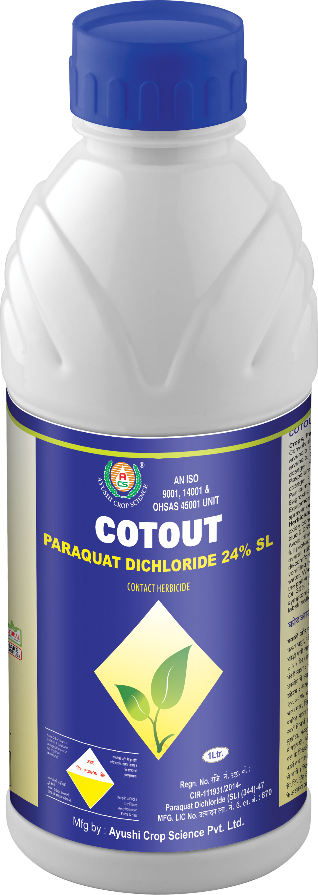

Technical Name: Paraquat Dichloride 24% SL
Major Crops: Cotton, Maize, Rice, Tea, Orchards (including fruit trees), Plantations (such as coffee and rubber)
Use/Benefits: Cotout is one of the most widely used herbicides in the world. It is quick-acting, non-selective, and kills green plant tissue on contact. It is redistributed within the plant but does not harm mature bark. It is used to protect crops by controlling a wide range of annual and certain perennial weeds that would otherwise compete with the crop for water, nutrients, and light.
Target Pest: Imperata cylindrica, Setaria spp., Commelina benghalensis, Boerhavia hispida arvensis, Euphorbia spp., Eleusine indica, Amaranthus sp., Rosa sp.
Presentation Available: 250ml, 500ml, 1ltr
Company: Best Agros